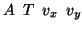
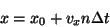
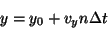
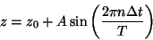
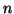
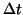
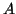
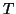
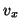
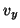

The tip can be scanned laterally at a constant velocity, or oscillated sinusoidally in the z-direction, or both at the same time. The option is followed by four parameters, as indicated above, which control the movement of the tip, according to the following equations of motion:




is the timestep number and
is the timestep itself. The units of
are Å, the units of
are ps, the units of
and
Å/ps.Options:
Default: no
Example: howto 4.0 20.0 1.0 1.0